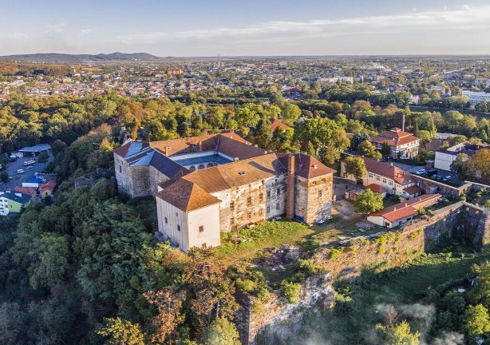

Місце та дата народження: 19.12.2002 року, м.Хуст, Закарпатської обл.
Освіта: ЗОШ I-III ступенів, с. Олександрівка
НТУУ "КПІ", м. Київ
Хоббі:
Улюблені книги:
Улюблені фільми:
У́жгород — місто на річці Уж в Закарпатській області України, центр Ужгородської міської громади та Ужгородського району. Розташоване за 811 км від Києва, на кордоні зі Словаччиною.
